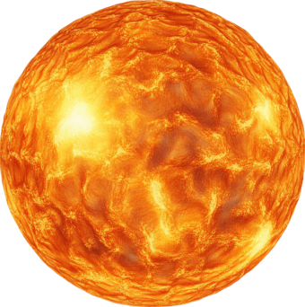

PLANET DASHBOARD
Current solar system status. Planets are scaled accurately based on their polar (top-to-bottom) diameters, ensuring that rings do not distort relative size comparisons.
SIZE
Compare physical polar diameters or apparent angular size from Earth or the Sun.
DISTANCE
Relative distances of the planets from your chosen anchor point.

IN THE SKY
Viewing favorability based on magnitude and elongation.